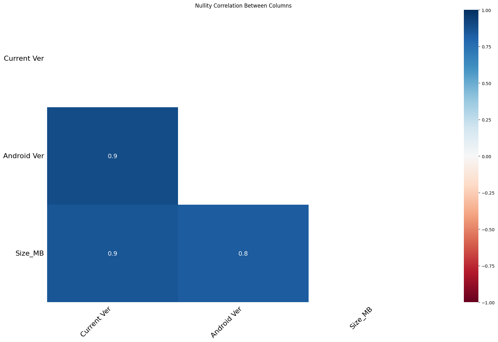
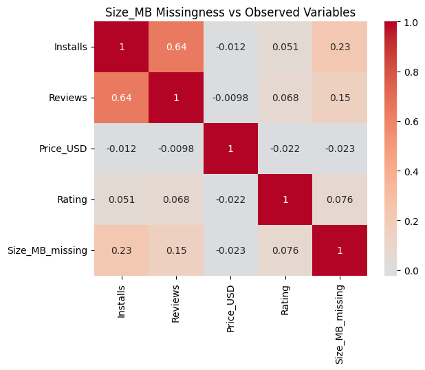

Data Cleaning & Preparation#
This notebook prepares the Google Play Store dataset for an Exploratory Data Analysis (EDA) that will identify which app categories are price-forgiving vs. price-sensitive, and whether a pricing tipping point exists. Every data cleaning, imputation, and dropping decision below is justified strictly with respect to preserving the integrity of this pricing and rating signal.
import pandas as pd
import seaborn as sns
import matplotlib.pyplot as plt
import numpy as np
import missingno as msno
from pyampute.exploration.mcar_statistical_tests import MCARTest
from scipy import stats
df = pd.read_csv("googleplaystore.csv", low_memory=False)
1. INSPECT DATA#
1.1) Check first few rows to understand the structure and what each column means.#
df.head()
| App | Category | Rating | Reviews | Size | Installs | Type | Price | Content Rating | Genres | Last Updated | Current Ver | Android Ver | |
|---|---|---|---|---|---|---|---|---|---|---|---|---|---|
| 0 | Photo Editor & Candy Camera & Grid & ScrapBook | ART_AND_DESIGN | 4.1 | 159 | 19M | 10,000+ | Free | 0 | Everyone | Art & Design | January 7, 2018 | 1.0.0 | 4.0.3 and up |
| 1 | Coloring book moana | ART_AND_DESIGN | 3.9 | 967 | 14M | 500,000+ | Free | 0 | Everyone | Art & Design;Pretend Play | January 15, 2018 | 2.0.0 | 4.0.3 and up |
| 2 | U Launcher Lite – FREE Live Cool Themes, Hide ... | ART_AND_DESIGN | 4.7 | 87510 | 8.7M | 5,000,000+ | Free | 0 | Everyone | Art & Design | August 1, 2018 | 1.2.4 | 4.0.3 and up |
| 3 | Sketch - Draw & Paint | ART_AND_DESIGN | 4.5 | 215644 | 25M | 50,000,000+ | Free | 0 | Teen | Art & Design | June 8, 2018 | Varies with device | 4.2 and up |
| 4 | Pixel Draw - Number Art Coloring Book | ART_AND_DESIGN | 4.3 | 967 | 2.8M | 100,000+ | Free | 0 | Everyone | Art & Design;Creativity | June 20, 2018 | 1.1 | 4.4 and up |
1.2) Check its shape understand entire dataset structure.#
df.shape
(10841, 13)
1.3) Get basic summary of the dataset.#
df.info()
<class 'pandas.core.frame.DataFrame'>
RangeIndex: 10841 entries, 0 to 10840
Data columns (total 13 columns):
# Column Non-Null Count Dtype
--- ------ -------------- -----
0 App 10841 non-null object
1 Category 10841 non-null object
2 Rating 9367 non-null float64
3 Reviews 10841 non-null object
4 Size 10841 non-null object
5 Installs 10841 non-null object
6 Type 10840 non-null object
7 Price 10841 non-null object
8 Content Rating 10840 non-null object
9 Genres 10841 non-null object
10 Last Updated 10841 non-null object
11 Current Ver 10833 non-null object
12 Android Ver 10838 non-null object
dtypes: float64(1), object(12)
memory usage: 1.1+ MB
There are a lot of columns that are supposed to be numeric but aren’t (rating, size, installs, price, current ver?, and android ver?). Also Last Updated is of object dtype, instead of date time.
1.4) Check summary statistics(added include=”all” to see the columns that are supposed to be numeric).#
df.describe(include="all")
| App | Category | Rating | Reviews | Size | Installs | Type | Price | Content Rating | Genres | Last Updated | Current Ver | Android Ver | |
|---|---|---|---|---|---|---|---|---|---|---|---|---|---|
| count | 10841 | 10841 | 9367.000000 | 10841 | 10841 | 10841 | 10840 | 10841 | 10840 | 10841 | 10841 | 10833 | 10838 |
| unique | 9660 | 34 | NaN | 6002 | 462 | 22 | 3 | 93 | 6 | 120 | 1378 | 2832 | 33 |
| top | ROBLOX | FAMILY | NaN | 0 | Varies with device | 1,000,000+ | Free | 0 | Everyone | Tools | August 3, 2018 | Varies with device | 4.1 and up |
| freq | 9 | 1972 | NaN | 596 | 1695 | 1579 | 10039 | 10040 | 8714 | 842 | 326 | 1459 | 2451 |
| mean | NaN | NaN | 4.193338 | NaN | NaN | NaN | NaN | NaN | NaN | NaN | NaN | NaN | NaN |
| std | NaN | NaN | 0.537431 | NaN | NaN | NaN | NaN | NaN | NaN | NaN | NaN | NaN | NaN |
| min | NaN | NaN | 1.000000 | NaN | NaN | NaN | NaN | NaN | NaN | NaN | NaN | NaN | NaN |
| 25% | NaN | NaN | 4.000000 | NaN | NaN | NaN | NaN | NaN | NaN | NaN | NaN | NaN | NaN |
| 50% | NaN | NaN | 4.300000 | NaN | NaN | NaN | NaN | NaN | NaN | NaN | NaN | NaN | NaN |
| 75% | NaN | NaN | 4.500000 | NaN | NaN | NaN | NaN | NaN | NaN | NaN | NaN | NaN | NaN |
| max | NaN | NaN | 19.000000 | NaN | NaN | NaN | NaN | NaN | NaN | NaN | NaN | NaN | NaN |
1.5) Get column names. Alternatively can just use df.columns.#
df.columns.to_list()
['App',
'Category',
'Rating',
'Reviews',
'Size',
'Installs',
'Type',
'Price',
'Content Rating',
'Genres',
'Last Updated',
'Current Ver',
'Android Ver']
1.6) Get summary percentages of nulls per column to get the null population before we clean(drop/ impute) them.#
df.isnull().sum()
App 0
Category 0
Rating 1474
Reviews 0
Size 0
Installs 0
Type 1
Price 0
Content Rating 1
Genres 0
Last Updated 0
Current Ver 8
Android Ver 3
dtype: int64
missing_pct = df.isnull().mean() * 100
print(missing_pct)
App 0.000000
Category 0.000000
Rating 13.596532
Reviews 0.000000
Size 0.000000
Installs 0.000000
Type 0.009224
Price 0.000000
Content Rating 0.009224
Genres 0.000000
Last Updated 0.000000
Current Ver 0.073794
Android Ver 0.027673
dtype: float64
Null Ratings — Drop Decision: An app without a Rating cannot be evaluated for price-forgiveness or price-sensitivity. It contributes no signal to our core EDA question and is therefore mathematically useless for this analysis. The ~13.5% missing rate is noted, but the decisive factor is not the percentage: a ratingless row carries zero analytical value for our specific objective. The missingness mechanism will be verified formally in Section 4.
2. Investigating Problems#
2.1) Checking the nulls#
2.1.1) Isolating the nulls into a separate dataframe.#
df_null = df[df['Rating'].isna()]
2.1.2) Inspect the first rows of the null dataframe.#
df_null.head(10)
| App | Category | Rating | Reviews | Size | Installs | Type | Price | Content Rating | Genres | Last Updated | Current Ver | Android Ver | |
|---|---|---|---|---|---|---|---|---|---|---|---|---|---|
| 23 | Mcqueen Coloring pages | ART_AND_DESIGN | NaN | 61 | 7.0M | 100,000+ | Free | 0 | Everyone | Art & Design;Action & Adventure | March 7, 2018 | 1.0.0 | 4.1 and up |
| 113 | Wrinkles and rejuvenation | BEAUTY | NaN | 182 | 5.7M | 100,000+ | Free | 0 | Everyone 10+ | Beauty | September 20, 2017 | 8.0 | 3.0 and up |
| 123 | Manicure - nail design | BEAUTY | NaN | 119 | 3.7M | 50,000+ | Free | 0 | Everyone | Beauty | July 23, 2018 | 1.3 | 4.1 and up |
| 126 | Skin Care and Natural Beauty | BEAUTY | NaN | 654 | 7.4M | 100,000+ | Free | 0 | Teen | Beauty | July 17, 2018 | 1.15 | 4.1 and up |
| 129 | Secrets of beauty, youth and health | BEAUTY | NaN | 77 | 2.9M | 10,000+ | Free | 0 | Mature 17+ | Beauty | August 8, 2017 | 2.0 | 2.3 and up |
| 130 | Recipes and tips for losing weight | BEAUTY | NaN | 35 | 3.1M | 10,000+ | Free | 0 | Everyone 10+ | Beauty | December 11, 2017 | 2.0 | 3.0 and up |
| 134 | Lady adviser (beauty, health) | BEAUTY | NaN | 30 | 9.9M | 10,000+ | Free | 0 | Mature 17+ | Beauty | January 24, 2018 | 3.0 | 3.0 and up |
| 163 | Anonymous caller detection | BOOKS_AND_REFERENCE | NaN | 161 | 2.7M | 10,000+ | Free | 0 | Everyone | Books & Reference | July 13, 2018 | 1.0 | 2.3 and up |
| 180 | SH-02J Owner's Manual (Android 8.0) | BOOKS_AND_REFERENCE | NaN | 2 | 7.2M | 50,000+ | Free | 0 | Everyone | Books & Reference | June 15, 2018 | 3.0 | 6.0 and up |
| 185 | URBANO V 02 instruction manual | BOOKS_AND_REFERENCE | NaN | 114 | 7.3M | 100,000+ | Free | 0 | Everyone | Books & Reference | August 7, 2015 | 1.1 | 5.1 and up |
2.2) Checking the duplicates.#
2.2.1) Get the sum for duplicates in the entire dataframe and separate columns.#
def duplicate_summary(df):
total_duplicate_rows = df.duplicated().sum()
duplicate_values_per_column = df.apply(
lambda col: col.duplicated(keep=False).sum()
)
print("Total duplicate rows:", total_duplicate_rows)
print("\nDuplicate values per column:")
print(duplicate_values_per_column)
duplicate_summary(df)
Total duplicate rows: 483
Duplicate values per column:
App 1979
Category 10840
Rating 10839
Reviews 5855
Size 10595
Installs 10839
Type 10839
Price 10787
Content Rating 10840
Genres 10817
Last Updated 10417
Current Ver 9030
Android Ver 10836
dtype: int64
2.2.2) Get the duplicate population percentage of the entire dataset.#
def check_duplicates(df):
duplicate_pct = df.apply(lambda col: col.duplicated(keep=False).mean()) * 100
total_duplicates = df.duplicated(keep=False).sum()
print("Column duplicates percentage:")
print(duplicate_pct)
print("\nTotal duplicate rows:", total_duplicates)
return #duplicate_pct, total_duplicates
check_duplicates(df)
Column duplicates percentage:
App 18.254774
Category 99.990776
Rating 99.981552
Reviews 54.007933
Size 97.730837
Installs 99.981552
Type 99.981552
Price 99.501891
Content Rating 99.990776
Genres 99.778618
Last Updated 96.088922
Current Ver 83.294899
Android Ver 99.953879
dtype: float64
Total duplicate rows: 893
2.2.3) Get total duplicates per column. Analyze each column and determine the duplicate-ness of each.#
def duplicate_per_column(df):
for col in df:
print(f"{col}: {df[col].duplicated().sum()}")
duplicate_per_column(df)
App: 1181
Category: 10807
Rating: 10800
Reviews: 4839
Size: 10379
Installs: 10819
Type: 10837
Price: 10748
Content Rating: 10834
Genres: 10721
Last Updated: 9463
Current Ver: 8008
Android Ver: 10807
CHECK APP COLUMN DUPLICATES#
df[df.duplicated(subset='App', keep=False)].sort_values('App').head(20)
| App | Category | Rating | Reviews | Size | Installs | Type | Price | Content Rating | Genres | Last Updated | Current Ver | Android Ver | |
|---|---|---|---|---|---|---|---|---|---|---|---|---|---|
| 1393 | 10 Best Foods for You | HEALTH_AND_FITNESS | 4.0 | 2490 | 3.8M | 500,000+ | Free | 0 | Everyone 10+ | Health & Fitness | February 17, 2017 | 1.9 | 2.3.3 and up |
| 1407 | 10 Best Foods for You | HEALTH_AND_FITNESS | 4.0 | 2490 | 3.8M | 500,000+ | Free | 0 | Everyone 10+ | Health & Fitness | February 17, 2017 | 1.9 | 2.3.3 and up |
| 2543 | 1800 Contacts - Lens Store | MEDICAL | 4.7 | 23160 | 26M | 1,000,000+ | Free | 0 | Everyone | Medical | July 27, 2018 | 7.4.1 | 5.0 and up |
| 2322 | 1800 Contacts - Lens Store | MEDICAL | 4.7 | 23160 | 26M | 1,000,000+ | Free | 0 | Everyone | Medical | July 27, 2018 | 7.4.1 | 5.0 and up |
| 2385 | 2017 EMRA Antibiotic Guide | MEDICAL | 4.4 | 12 | 3.8M | 1,000+ | Paid | $16.99 | Everyone | Medical | January 27, 2017 | 1.0.5 | 4.0.3 and up |
| 2256 | 2017 EMRA Antibiotic Guide | MEDICAL | 4.4 | 12 | 3.8M | 1,000+ | Paid | $16.99 | Everyone | Medical | January 27, 2017 | 1.0.5 | 4.0.3 and up |
| 1337 | 21-Day Meditation Experience | HEALTH_AND_FITNESS | 4.4 | 11506 | 15M | 100,000+ | Free | 0 | Everyone | Health & Fitness | August 2, 2018 | 3.0.0 | 4.1 and up |
| 1434 | 21-Day Meditation Experience | HEALTH_AND_FITNESS | 4.4 | 11506 | 15M | 100,000+ | Free | 0 | Everyone | Health & Fitness | August 2, 2018 | 3.0.0 | 4.1 and up |
| 3083 | 365Scores - Live Scores | SPORTS | 4.6 | 666521 | 25M | 10,000,000+ | Free | 0 | Everyone | Sports | July 29, 2018 | 5.5.9 | 4.1 and up |
| 5415 | 365Scores - Live Scores | SPORTS | 4.6 | 666246 | 25M | 10,000,000+ | Free | 0 | Everyone | Sports | July 29, 2018 | 5.5.9 | 4.1 and up |
| 7035 | 420 BZ Budeze Delivery | MEDICAL | 5.0 | 2 | 11M | 100+ | Free | 0 | Mature 17+ | Medical | June 6, 2018 | 1.0.1 | 4.1 and up |
| 2522 | 420 BZ Budeze Delivery | MEDICAL | 5.0 | 2 | 11M | 100+ | Free | 0 | Mature 17+ | Medical | June 6, 2018 | 1.0.1 | 4.1 and up |
| 3953 | 8 Ball Pool | SPORTS | 4.5 | 14184910 | 52M | 100,000,000+ | Free | 0 | Everyone | Sports | July 31, 2018 | 4.0.0 | 4.0.3 and up |
| 1970 | 8 Ball Pool | GAME | 4.5 | 14201604 | 52M | 100,000,000+ | Free | 0 | Everyone | Sports | July 31, 2018 | 4.0.0 | 4.0.3 and up |
| 1844 | 8 Ball Pool | GAME | 4.5 | 14200550 | 52M | 100,000,000+ | Free | 0 | Everyone | Sports | July 31, 2018 | 4.0.0 | 4.0.3 and up |
| 1755 | 8 Ball Pool | GAME | 4.5 | 14200344 | 52M | 100,000,000+ | Free | 0 | Everyone | Sports | July 31, 2018 | 4.0.0 | 4.0.3 and up |
| 1703 | 8 Ball Pool | GAME | 4.5 | 14198602 | 52M | 100,000,000+ | Free | 0 | Everyone | Sports | July 31, 2018 | 4.0.0 | 4.0.3 and up |
| 1675 | 8 Ball Pool | GAME | 4.5 | 14198297 | 52M | 100,000,000+ | Free | 0 | Everyone | Sports | July 31, 2018 | 4.0.0 | 4.0.3 and up |
| 1871 | 8 Ball Pool | GAME | 4.5 | 14201891 | 52M | 100,000,000+ | Free | 0 | Everyone | Sports | July 31, 2018 | 4.0.0 | 4.0.3 and up |
| 1324 | 8fit Workouts & Meal Planner | HEALTH_AND_FITNESS | 4.6 | 115721 | 67M | 10,000,000+ | Free | 0 | Everyone | Health & Fitness | July 11, 2018 | 3.5.0 | 5.0 and up |
2.3) Checking inconsistent categorical values#
2.3.1) Check unique values per column. Ultimate re-usable function.#
def unique_summary(df):
for col in df.columns:
print(f"\n{'-'*10}")
print(f"Column: {col}")
print(f"Total records: {len(df[col])}")
print(f"Total unique: {df[col].nunique(dropna=False)}")
print(f"Unique values:")
print(df[col].unique())
unique_summary(df)
----------
Column: App
Total records: 10841
Total unique: 9660
Unique values:
['Photo Editor & Candy Camera & Grid & ScrapBook' 'Coloring book moana'
'U Launcher Lite – FREE Live Cool Themes, Hide Apps' ...
'Parkinson Exercices FR' 'The SCP Foundation DB fr nn5n'
'iHoroscope - 2018 Daily Horoscope & Astrology']
----------
Column: Category
Total records: 10841
Total unique: 34
Unique values:
['ART_AND_DESIGN' 'AUTO_AND_VEHICLES' 'BEAUTY' 'BOOKS_AND_REFERENCE'
'BUSINESS' 'COMICS' 'COMMUNICATION' 'DATING' 'EDUCATION' 'ENTERTAINMENT'
'EVENTS' 'FINANCE' 'FOOD_AND_DRINK' 'HEALTH_AND_FITNESS' 'HOUSE_AND_HOME'
'LIBRARIES_AND_DEMO' 'LIFESTYLE' 'GAME' 'FAMILY' 'MEDICAL' 'SOCIAL'
'SHOPPING' 'PHOTOGRAPHY' 'SPORTS' 'TRAVEL_AND_LOCAL' 'TOOLS'
'PERSONALIZATION' 'PRODUCTIVITY' 'PARENTING' 'WEATHER' 'VIDEO_PLAYERS'
'NEWS_AND_MAGAZINES' 'MAPS_AND_NAVIGATION' '1.9']
----------
Column: Rating
Total records: 10841
Total unique: 41
Unique values:
[ 4.1 3.9 4.7 4.5 4.3 4.4 3.8 4.2 4.6 3.2 4. nan 4.8 4.9
3.6 3.7 3.3 3.4 3.5 3.1 5. 2.6 3. 1.9 2.5 2.8 2.7 1.
2.9 2.3 2.2 1.7 2. 1.8 2.4 1.6 2.1 1.4 1.5 1.2 19. ]
----------
Column: Reviews
Total records: 10841
Total unique: 6002
Unique values:
['159' '967' '87510' ... '603' '1195' '398307']
----------
Column: Size
Total records: 10841
Total unique: 462
Unique values:
['19M' '14M' '8.7M' '25M' '2.8M' '5.6M' '29M' '33M' '3.1M' '28M' '12M'
'20M' '21M' '37M' '2.7M' '5.5M' '17M' '39M' '31M' '4.2M' '7.0M' '23M'
'6.0M' '6.1M' '4.6M' '9.2M' '5.2M' '11M' '24M' 'Varies with device'
'9.4M' '15M' '10M' '1.2M' '26M' '8.0M' '7.9M' '56M' '57M' '35M' '54M'
'201k' '3.6M' '5.7M' '8.6M' '2.4M' '27M' '2.5M' '16M' '3.4M' '8.9M'
'3.9M' '2.9M' '38M' '32M' '5.4M' '18M' '1.1M' '2.2M' '4.5M' '9.8M' '52M'
'9.0M' '6.7M' '30M' '2.6M' '7.1M' '3.7M' '22M' '7.4M' '6.4M' '3.2M'
'8.2M' '9.9M' '4.9M' '9.5M' '5.0M' '5.9M' '13M' '73M' '6.8M' '3.5M'
'4.0M' '2.3M' '7.2M' '2.1M' '42M' '7.3M' '9.1M' '55M' '23k' '6.5M' '1.5M'
'7.5M' '51M' '41M' '48M' '8.5M' '46M' '8.3M' '4.3M' '4.7M' '3.3M' '40M'
'7.8M' '8.8M' '6.6M' '5.1M' '61M' '66M' '79k' '8.4M' '118k' '44M' '695k'
'1.6M' '6.2M' '18k' '53M' '1.4M' '3.0M' '5.8M' '3.8M' '9.6M' '45M' '63M'
'49M' '77M' '4.4M' '4.8M' '70M' '6.9M' '9.3M' '10.0M' '8.1M' '36M' '84M'
'97M' '2.0M' '1.9M' '1.8M' '5.3M' '47M' '556k' '526k' '76M' '7.6M' '59M'
'9.7M' '78M' '72M' '43M' '7.7M' '6.3M' '334k' '34M' '93M' '65M' '79M'
'100M' '58M' '50M' '68M' '64M' '67M' '60M' '94M' '232k' '99M' '624k'
'95M' '8.5k' '41k' '292k' '11k' '80M' '1.7M' '74M' '62M' '69M' '75M'
'98M' '85M' '82M' '96M' '87M' '71M' '86M' '91M' '81M' '92M' '83M' '88M'
'704k' '862k' '899k' '378k' '266k' '375k' '1.3M' '975k' '980k' '4.1M'
'89M' '696k' '544k' '525k' '920k' '779k' '853k' '720k' '713k' '772k'
'318k' '58k' '241k' '196k' '857k' '51k' '953k' '865k' '251k' '930k'
'540k' '313k' '746k' '203k' '26k' '314k' '239k' '371k' '220k' '730k'
'756k' '91k' '293k' '17k' '74k' '14k' '317k' '78k' '924k' '902k' '818k'
'81k' '939k' '169k' '45k' '475k' '965k' '90M' '545k' '61k' '283k' '655k'
'714k' '93k' '872k' '121k' '322k' '1.0M' '976k' '172k' '238k' '549k'
'206k' '954k' '444k' '717k' '210k' '609k' '308k' '705k' '306k' '904k'
'473k' '175k' '350k' '383k' '454k' '421k' '70k' '812k' '442k' '842k'
'417k' '412k' '459k' '478k' '335k' '782k' '721k' '430k' '429k' '192k'
'200k' '460k' '728k' '496k' '816k' '414k' '506k' '887k' '613k' '243k'
'569k' '778k' '683k' '592k' '319k' '186k' '840k' '647k' '191k' '373k'
'437k' '598k' '716k' '585k' '982k' '222k' '219k' '55k' '948k' '323k'
'691k' '511k' '951k' '963k' '25k' '554k' '351k' '27k' '82k' '208k' '913k'
'514k' '551k' '29k' '103k' '898k' '743k' '116k' '153k' '209k' '353k'
'499k' '173k' '597k' '809k' '122k' '411k' '400k' '801k' '787k' '237k'
'50k' '643k' '986k' '97k' '516k' '837k' '780k' '961k' '269k' '20k' '498k'
'600k' '749k' '642k' '881k' '72k' '656k' '601k' '221k' '228k' '108k'
'940k' '176k' '33k' '663k' '34k' '942k' '259k' '164k' '458k' '245k'
'629k' '28k' '288k' '775k' '785k' '636k' '916k' '994k' '309k' '485k'
'914k' '903k' '608k' '500k' '54k' '562k' '847k' '957k' '688k' '811k'
'270k' '48k' '329k' '523k' '921k' '874k' '981k' '784k' '280k' '24k'
'518k' '754k' '892k' '154k' '860k' '364k' '387k' '626k' '161k' '879k'
'39k' '970k' '170k' '141k' '160k' '144k' '143k' '190k' '376k' '193k'
'246k' '73k' '658k' '992k' '253k' '420k' '404k' '1,000+' '470k' '226k'
'240k' '89k' '234k' '257k' '861k' '467k' '157k' '44k' '676k' '67k' '552k'
'885k' '1020k' '582k' '619k']
----------
Column: Installs
Total records: 10841
Total unique: 22
Unique values:
['10,000+' '500,000+' '5,000,000+' '50,000,000+' '100,000+' '50,000+'
'1,000,000+' '10,000,000+' '5,000+' '100,000,000+' '1,000,000,000+'
'1,000+' '500,000,000+' '50+' '100+' '500+' '10+' '1+' '5+' '0+' '0'
'Free']
----------
Column: Type
Total records: 10841
Total unique: 4
Unique values:
['Free' 'Paid' nan '0']
----------
Column: Price
Total records: 10841
Total unique: 93
Unique values:
['0' '$4.99' '$3.99' '$6.99' '$1.49' '$2.99' '$7.99' '$5.99' '$3.49'
'$1.99' '$9.99' '$7.49' '$0.99' '$9.00' '$5.49' '$10.00' '$24.99'
'$11.99' '$79.99' '$16.99' '$14.99' '$1.00' '$29.99' '$12.99' '$2.49'
'$10.99' '$1.50' '$19.99' '$15.99' '$33.99' '$74.99' '$39.99' '$3.95'
'$4.49' '$1.70' '$8.99' '$2.00' '$3.88' '$25.99' '$399.99' '$17.99'
'$400.00' '$3.02' '$1.76' '$4.84' '$4.77' '$1.61' '$2.50' '$1.59' '$6.49'
'$1.29' '$5.00' '$13.99' '$299.99' '$379.99' '$37.99' '$18.99' '$389.99'
'$19.90' '$8.49' '$1.75' '$14.00' '$4.85' '$46.99' '$109.99' '$154.99'
'$3.08' '$2.59' '$4.80' '$1.96' '$19.40' '$3.90' '$4.59' '$15.46' '$3.04'
'$4.29' '$2.60' '$3.28' '$4.60' '$28.99' '$2.95' '$2.90' '$1.97'
'$200.00' '$89.99' '$2.56' '$30.99' '$3.61' '$394.99' '$1.26' 'Everyone'
'$1.20' '$1.04']
----------
Column: Content Rating
Total records: 10841
Total unique: 7
Unique values:
['Everyone' 'Teen' 'Everyone 10+' 'Mature 17+' 'Adults only 18+' 'Unrated'
nan]
----------
Column: Genres
Total records: 10841
Total unique: 120
Unique values:
['Art & Design' 'Art & Design;Pretend Play' 'Art & Design;Creativity'
'Art & Design;Action & Adventure' 'Auto & Vehicles' 'Beauty'
'Books & Reference' 'Business' 'Comics' 'Comics;Creativity'
'Communication' 'Dating' 'Education;Education' 'Education'
'Education;Creativity' 'Education;Music & Video'
'Education;Action & Adventure' 'Education;Pretend Play'
'Education;Brain Games' 'Entertainment' 'Entertainment;Music & Video'
'Entertainment;Brain Games' 'Entertainment;Creativity' 'Events' 'Finance'
'Food & Drink' 'Health & Fitness' 'House & Home' 'Libraries & Demo'
'Lifestyle' 'Lifestyle;Pretend Play' 'Adventure;Action & Adventure'
'Arcade' 'Casual' 'Card' 'Casual;Pretend Play' 'Action' 'Strategy'
'Puzzle' 'Sports' 'Music' 'Word' 'Racing' 'Casual;Creativity'
'Casual;Action & Adventure' 'Simulation' 'Adventure' 'Board' 'Trivia'
'Role Playing' 'Simulation;Education' 'Action;Action & Adventure'
'Casual;Brain Games' 'Simulation;Action & Adventure'
'Educational;Creativity' 'Puzzle;Brain Games' 'Educational;Education'
'Card;Brain Games' 'Educational;Brain Games' 'Educational;Pretend Play'
'Entertainment;Education' 'Casual;Education' 'Music;Music & Video'
'Racing;Action & Adventure' 'Arcade;Pretend Play'
'Role Playing;Action & Adventure' 'Simulation;Pretend Play'
'Puzzle;Creativity' 'Sports;Action & Adventure'
'Educational;Action & Adventure' 'Arcade;Action & Adventure'
'Entertainment;Action & Adventure' 'Puzzle;Action & Adventure'
'Strategy;Action & Adventure' 'Music & Audio;Music & Video'
'Health & Fitness;Education' 'Adventure;Education' 'Board;Brain Games'
'Board;Action & Adventure' 'Board;Pretend Play' 'Casual;Music & Video'
'Role Playing;Pretend Play' 'Entertainment;Pretend Play'
'Video Players & Editors;Creativity' 'Card;Action & Adventure' 'Medical'
'Social' 'Shopping' 'Photography' 'Travel & Local'
'Travel & Local;Action & Adventure' 'Tools' 'Tools;Education'
'Personalization' 'Productivity' 'Parenting' 'Parenting;Music & Video'
'Parenting;Education' 'Parenting;Brain Games' 'Weather'
'Video Players & Editors' 'Video Players & Editors;Music & Video'
'News & Magazines' 'Maps & Navigation'
'Health & Fitness;Action & Adventure' 'Educational' 'Casino'
'Adventure;Brain Games' 'Trivia;Education' 'Lifestyle;Education'
'Books & Reference;Creativity' 'Books & Reference;Education'
'Puzzle;Education' 'Role Playing;Education' 'Role Playing;Brain Games'
'Strategy;Education' 'Racing;Pretend Play' 'Communication;Creativity'
'February 11, 2018' 'Strategy;Creativity']
----------
Column: Last Updated
Total records: 10841
Total unique: 1378
Unique values:
['January 7, 2018' 'January 15, 2018' 'August 1, 2018' ...
'January 20, 2014' 'February 16, 2014' 'March 23, 2014']
----------
Column: Current Ver
Total records: 10841
Total unique: 2833
Unique values:
['1.0.0' '2.0.0' '1.2.4' ... '1.0.612928' '0.3.4' '2.0.148.0']
----------
Column: Android Ver
Total records: 10841
Total unique: 34
Unique values:
['4.0.3 and up' '4.2 and up' '4.4 and up' '2.3 and up' '3.0 and up'
'4.1 and up' '4.0 and up' '2.3.3 and up' 'Varies with device'
'2.2 and up' '5.0 and up' '6.0 and up' '1.6 and up' '1.5 and up'
'2.1 and up' '7.0 and up' '5.1 and up' '4.3 and up' '4.0.3 - 7.1.1'
'2.0 and up' '3.2 and up' '4.4W and up' '7.1 and up' '7.0 - 7.1.1'
'8.0 and up' '5.0 - 8.0' '3.1 and up' '2.0.1 and up' '4.1 - 7.1.1' nan
'5.0 - 6.0' '1.0 and up' '2.2 - 7.1.1' '5.0 - 7.1.1']
In the dataframe, M stands for megabyte, k stands for kilobyte?
We check if there is kb#
kb_sizes = df[df['Size'].str.contains(r'k$', case=False, na=False)]['Size'].unique()
print(kb_sizes)
['201k' '23k' '79k' '118k' '695k' '18k' '556k' '526k' '334k' '232k' '624k'
'8.5k' '41k' '292k' '11k' '704k' '862k' '899k' '378k' '266k' '375k'
'975k' '980k' '696k' '544k' '525k' '920k' '779k' '853k' '720k' '713k'
'772k' '318k' '58k' '241k' '196k' '857k' '51k' '953k' '865k' '251k'
'930k' '540k' '313k' '746k' '203k' '26k' '314k' '239k' '371k' '220k'
'730k' '756k' '91k' '293k' '17k' '74k' '14k' '317k' '78k' '924k' '902k'
'818k' '81k' '939k' '169k' '45k' '475k' '965k' '545k' '61k' '283k' '655k'
'714k' '93k' '872k' '121k' '322k' '976k' '172k' '238k' '549k' '206k'
'954k' '444k' '717k' '210k' '609k' '308k' '705k' '306k' '904k' '473k'
'175k' '350k' '383k' '454k' '421k' '70k' '812k' '442k' '842k' '417k'
'412k' '459k' '478k' '335k' '782k' '721k' '430k' '429k' '192k' '200k'
'460k' '728k' '496k' '816k' '414k' '506k' '887k' '613k' '243k' '569k'
'778k' '683k' '592k' '319k' '186k' '840k' '647k' '191k' '373k' '437k'
'598k' '716k' '585k' '982k' '222k' '219k' '55k' '948k' '323k' '691k'
'511k' '951k' '963k' '25k' '554k' '351k' '27k' '82k' '208k' '913k' '514k'
'551k' '29k' '103k' '898k' '743k' '116k' '153k' '209k' '353k' '499k'
'173k' '597k' '809k' '122k' '411k' '400k' '801k' '787k' '237k' '50k'
'643k' '986k' '97k' '516k' '837k' '780k' '961k' '269k' '20k' '498k'
'600k' '749k' '642k' '881k' '72k' '656k' '601k' '221k' '228k' '108k'
'940k' '176k' '33k' '663k' '34k' '942k' '259k' '164k' '458k' '245k'
'629k' '28k' '288k' '775k' '785k' '636k' '916k' '994k' '309k' '485k'
'914k' '903k' '608k' '500k' '54k' '562k' '847k' '957k' '688k' '811k'
'270k' '48k' '329k' '523k' '921k' '874k' '981k' '784k' '280k' '24k'
'518k' '754k' '892k' '154k' '860k' '364k' '387k' '626k' '161k' '879k'
'39k' '970k' '170k' '141k' '160k' '144k' '143k' '190k' '376k' '193k'
'246k' '73k' '658k' '992k' '253k' '420k' '404k' '470k' '226k' '240k'
'89k' '234k' '257k' '861k' '467k' '157k' '44k' '676k' '67k' '552k' '885k'
'1020k' '582k' '619k']
problems regarding file size#
The M and K
How do I standardize both since if I strip both 903k become 903, unless if we separate them?
install problem#
‘+’ sign after
price problems#
$ sign and “Everyone”
2.4) Extreme values#
2.4.1) Check extreme values of Reviews column ( the only numeric by default col).#
df['Rating'].astype(float).sort_values(ascending=False).head(10)
10472 19.0
9511 5.0
10166 5.0
7895 5.0
5118 5.0
6953 5.0
5125 5.0
7896 5.0
5139 5.0
5145 5.0
Name: Rating, dtype: float64
10472 is a pain in the ass. Ratings should be 1-5. Will check that row.
df[df["Rating"] > 5]
| App | Category | Rating | Reviews | Size | Installs | Type | Price | Content Rating | Genres | Last Updated | Current Ver | Android Ver | |
|---|---|---|---|---|---|---|---|---|---|---|---|---|---|
| 10472 | Life Made WI-Fi Touchscreen Photo Frame | 1.9 | 19.0 | 3.0M | 1,000+ | Free | 0 | Everyone | NaN | February 11, 2018 | 1.0.19 | 4.0 and up | NaN |
The row at index 10472 contains a Rating value of 19.0, an impossible entry on a 1–5 scale. Inspection confirms the row is a row-shift error: column values are misaligned, producing corrupt metrics across the board. A row with invalid metrics cannot be used to assess how ratings respond to pricing, so it is removed without imputation. All other rows with valid (or missing) ratings are preserved.
Summary of Problems#
Rating column — ~13.5% missing values; also contains an invalid outlier value (19), impossible on a 1–5 scale
Reviews column — stored as text; at least one record uses shorthand notation (
'3.0M') mixed in with plain integer values, so it cannot be directly converted to numericSize column — inconsistent units, mixing
'M'(megabytes) and'k'(kilobytes) in the same column, plus non-numeric'Varies with device'entries. Removing both by default would represent the data wrong. Search for workarounds we can do to standardize them without separating them to individual columns.Installs column — stored as text with a trailing
'+'and comma thousands separators, preventing numeric conversion. The dilemma with removing the ‘+’ is we might underestimate the value of the data. But keeping it hinders us from numerical analysis.Price column — stored as text with a leading
'$'sign, preventing numeric conversionDuplicate App records — the same app name appears multiple times; some are legitimate re-scrapes at different review counts, others may be true duplicates, requiring manual review rather than automatic dropping
Incorrect data types —
Size,Installs,Price, andReviewsare stored as object/string dtype despite representing numeric quantities. MeanwhileLast Updatedis supposed to be date time.
3. CLEANING PIPELINE#
3.1) Remove that one problematic record(10472), while keeping the rest of the nulls.#
df = df[(df["Rating"] <= 5) | (df["Rating"].isna())].copy()
df.shape
(10840, 13)
3.2) Fix all wrong dtypes. (Size, Reviews, Installs, Price, Last Updated)#
3.2.1) Fixing size. We convert k to mb ( divide by 1024) to get one standard value.#
def clean_size(x):
if pd.isna(x) or x == 'Varies with device':
return np.nan
if x.endswith('M'):
return float(x[:-1])
if x.endswith('k'):
return float(x[:-1]) / 1024
return np.nan
df['Size_MB'] = df['Size'].apply(clean_size)
df.drop(columns='Size', inplace=True)
# percentage of nulls vs total
null_size = df['Size_MB'].isnull().sum()
total_size = df['Size_MB'].count()
null_size_pct = df['Size_MB'].isnull().mean() * 100
print(f"{null_size} is the total null records.")
print(f"{null_size_pct:.2f}% is the total null percentage.")
print(f"{total_size} is the total non-null Size_MB records.")
1695 is the total null records.
15.64% is the total null percentage.
9145 is the total non-null Size_MB records.
3.2.2) Fixing Reviews — Removing the 3.0M Shorthand Record#
One record stores its review count as the string '3.0M' (shorthand for ~3 million), which prevents numeric conversion. Accurate review counts are critical: before we can trust that a premium-priced app’s rating reflects genuine user sentiment, we must be able to filter for statistical reliability (see Section 3.5 (Reviews ≥ 500 threshold)). A corrupted review count makes that reliability filter impossible to apply correctly, so the record is dropped.
# find non-digit characters
suspicious_reviews = df[df['Reviews'].astype(str).str.contains(r'\D', regex=True, na=False)]
print(f"Rows with non-numeric reviews: {len(suspicious_reviews)}")
Rows with non-numeric reviews: 0
df['Reviews'] = pd.to_numeric(df['Reviews'], errors='coerce')
df['Reviews'] = df['Reviews'].astype('Int64')
3.2.3) Fixing Installs. (The “+” issue)#
df['Installs'] = (
df['Installs']
.astype(str)
.str.replace('+', '', regex=False)
.str.replace(',', '', regex=False)
)
df['Installs'] = pd.to_numeric(df['Installs'], errors='coerce').astype('Int64')
3.2.4) Fixing Price. ($ problem and “Everyone”)#
df['Price'] = (
df['Price']
.astype(str)
.str.replace('$', '', regex=False)
.replace('Everyone', '0')
)
df['Price'] = pd.to_numeric(df['Price'], errors='coerce')
# rename for clarity
df = df.rename(columns={'Price': 'Price_USD'})
3.2.5) Convert Last Updated to date time.#
# sanity check!
temp_dates = pd.to_datetime(df['Last Updated'], errors='coerce')
# 2. Filter the dataframe to show only the rows that failed
invalid_dates = df[temp_dates.isna()]
print(f"Invalid date formats found: {len(invalid_dates)}")
Invalid date formats found: 0
df['Last Updated'] = pd.to_datetime(df['Last Updated'], errors='coerce')
Check dtypes!#
df.dtypes
App object
Category object
Rating float64
Reviews Int64
Installs Int64
Type object
Price_USD float64
Content Rating object
Genres object
Last Updated datetime64[ns]
Current Ver object
Android Ver object
Size_MB float64
dtype: object
3.3) Standardize all columns with strings.#
string_columns = df.select_dtypes(include=['object', 'string']).columns
for col in string_columns:
df[col] = df[col].astype(str).str.strip().str.lower()
3.4) Fix wrong/inconsistent values. (“Varies with device” issue). Turning them to nan.#
for col in df.columns:
if (df[col].astype(str) == 'varies with device').any():
count = (df[col] == 'varies with device').sum()
print(f"Found in {col}: {count} rows")
df = df.replace('varies with device', np.nan)
Found in Current Ver: 1459 rows
Found in Android Ver: 1362 rows
4. Handling the NaNs.#
4.1) Checking null composition and finding string-literal nulls(‘nan’, ‘n/a’, etc.)#
4.1.1) Calculating null composition (again).#
df.isnull().sum()
App 0
Category 0
Rating 1474
Reviews 0
Installs 0
Type 0
Price_USD 0
Content Rating 0
Genres 0
Last Updated 0
Current Ver 1459
Android Ver 1362
Size_MB 1695
dtype: int64
pct_null = df.isnull().mean() * 100
pct_null.round(2)
App 0.00
Category 0.00
Rating 13.60
Reviews 0.00
Installs 0.00
Type 0.00
Price_USD 0.00
Content Rating 0.00
Genres 0.00
Last Updated 0.00
Current Ver 13.46
Android Ver 12.56
Size_MB 15.64
dtype: float64
Remaining Null Assessment: Before deciding to drop any remaining nulls, we must consider whether doing so would systematically bias the pricing and rating signal our EDA depends on. Specifically: if the rows with missing Type, Current Ver, or Android Ver are disproportionately high-price or high-install apps, dropping them would distort the price-forgiveness signal. The missingness mechanisms for each column are diagnosed formally in the Missing Case Analysis below (Section 4). Decisions to drop or impute are made there, not here, to preserve analytical integrity.
def find_string_nulls(df, suspects=('nan', 'null', 'n/a', 'na', 'none', '')):
found = {}
for col in df.select_dtypes(include='object'):
mask = df[col].str.strip().str.lower().isin(suspects)
if mask.any():
found[col] = mask.sum()
return found
imposter_nulls = find_string_nulls(df)
print(imposter_nulls)
{'Type': 1, 'Current Ver': 8, 'Android Ver': 2}
# change them to actual nulls
suspects = ['nan', 'null', 'n/a', 'na', 'none', '']
for col in imposter_nulls:
mask = df[col].str.strip().str.lower().isin(suspects)
df.loc[mask, col] = np.nan
print(find_string_nulls(df))
{}
4.2) Missing Case Analysis#
4.2.1) Analyze missingness of Rating.#
Missing Rating in Play Store apps is MAR: it depends on observed Reviews/Installs, not the unseen rating itself. Apps with few users/reviews lack scores, so missingness is predictable, not MCAR or MNAR.
Rating is an outcome variable, imputing it would fabricate the target and bias results, especially since missingness reflects low Reviews/Installs. At ~13.6% missing, dropping those rows is the cleanest choice.
# drop it
df = df.dropna(subset=['Rating'])
# Verify that 0 missing ratings remain
print(df['Rating'].isna().sum())
0
4.3) Analyze missingness of Size_MB.#
Size_MB is a core predictor in our research question. We diagnose its missingness with statistical tests first, then decide the mechanism and strategy from what the evidence shows.
4.3.1) Diagnostic: Little’s MCAR Test#
Tests whether missingness across the numeric columns is completely random (MCAR).
mcar_cols = ['Installs', 'Reviews', 'Price_USD', 'Size_MB']
mt = MCARTest(method="little")
p_little = mt.little_mcar_test(df[mcar_cols])
print(f"Little's MCAR test p-value: {p_little:.4f}")
if p_little < 0.05:
print("-> Reject MCAR: missingness is NOT completely random.")
else:
print("-> Fail to reject MCAR: missingness is consistent with random.")
Little's MCAR test p-value: 0.0000
-> Reject MCAR: missingness is NOT completely random.
4.3.2) Diagnostic: Missingness Heatmap (check for MAR)#
If MCAR is rejected, we check whether Size_MB’s missingness correlates with other columns, which is evidence of MAR.
# Nullity correlation across all columns with missing data
msno.heatmap(df)
plt.title("Nullity Correlation Between Columns")
plt.show()

# Does Size_MB's missingness correlate with observed numeric variables?
check_df = df[['Installs', 'Reviews', 'Price_USD', 'Rating']].copy()
check_df['Size_MB_missing'] = df['Size_MB'].isna().astype(int)
corr = check_df.corr(numeric_only=True)
sns.heatmap(corr, annot=True, cmap='coolwarm', center=0)
plt.title("Size_MB Missingness vs Observed Variables")
plt.show()
print(corr['Size_MB_missing'].drop('Size_MB_missing').sort_values())

Price_USD -0.022901
Rating 0.075520
Reviews 0.151623
Installs 0.225777
Name: Size_MB_missing, dtype: float64
Little’s test rejects MCAR, and the heatmaps show Size_MB’s missingness correlates with Installs (and with Current Ver/Android Ver missingness) not with Rating. Missingness is explainable by an observed variable, which is the definition of MAR.
Unlike standard correlation, where 0.20 indicates a weak relationship, a non-zero correlation with a missingness indicator suggests missingness depends on an observed variable, providing evidence against MCAR and supporting MAR.
Domain match: every missing value came from “Varies with device,” a label used mainly by large, high-install apps shipping device-specific builds.
Size_MB is a predictor, and its missingness concentrates in the highest-install apps, exactly the apps most relevant to the research question. Dropping them would bias the size-installs relationship. Impute with the category median, and keep a Size_Varies flag so the “varies with device” signal isn’t lost.
df['Size_Varies'] = df['Size_MB'].isna()
category_median_size = df.groupby('Category')['Size_MB'].transform('median')
overall_median_size = df['Size_MB'].median()
df['Size_MB'] = df['Size_MB'].fillna(category_median_size)
df['Size_MB'] = df['Size_MB'].fillna(overall_median_size)
print(f"Remaining nulls in Size_MB: {df['Size_MB'].isna().sum()}")
print(f"Apps flagged Size_Varies: {df['Size_Varies'].sum()}")
Remaining nulls in Size_MB: 0
Apps flagged Size_Varies: 1637
4.4) Analyze missingness of Categorical/Text Columns (Type, Current Ver, Android Ver)#
Type has only 1 missing row. For Current Ver/Android Ver, we test association with the Size_Varies flag from 5.1 (same “varies with device” text).
# Type: inspect the single missing row
print("Row(s) missing Type:")
print(df[df['Type'].isna()][['App', 'Category', 'Price_USD']])
Row(s) missing Type:
Empty DataFrame
Columns: [App, Category, Price_USD]
Index: []
# Current Ver / Android Ver: quantify missingness
cur_missing = df['Current Ver'].isna()
and_missing = df['Android Ver'].isna()
print(f"\nCurrent Ver missing: {cur_missing.sum()} ({cur_missing.mean()*100:.2f}%)")
print(f"Android Ver missing: {and_missing.sum()} ({and_missing.mean()*100:.2f}%)")
Current Ver missing: 1419 (15.15%)
Android Ver missing: 1321 (14.10%)
4.4.1) Chi-square test#
# Chi-square test: is Current Ver missingness associated with Size_Varies?
contingency = pd.crosstab(df['Size_Varies'], cur_missing)
chi2, p_chi2, dof, expected = stats.chi2_contingency(contingency)
print("\nCrosstab: Size_Varies vs Current Ver missing")
print(contingency)
print(f"\nChi-square p-value: {p_chi2:.4e}")
Crosstab: Size_Varies vs Current Ver missing
Current Ver False True
Size_Varies
False 7652 77
True 295 1342
Chi-square p-value: 0.0000e+00
Type — a single missing row, no pattern to test: MCAR, likely a one-off data-entry gap.
Current Ver/Android Ver — the chi-square test rejects independence from Size_Varies: missingness is explained by the same observed condition (device-adaptive delivery) as Size_MB. Same mechanism as 4.3: MAR.
Type encodes the pricing model, part of our research question: drop the 1 row rather than guess it. Current Ver/Android Ver are outside the research question’s scope, so we keep the rows and impute with an explicit "unknown" placeholder instead of dropping ~13% of the data.
df = df.dropna(subset=['Type']).copy()
4.4.2) Correction: Version Missing Values#
The earlier cleaning step incorrectly converted "Varies with device" to NaN in Current Ver and Android Ver. Unlike Size_MB, this is meaningful information for version columns. We therefore restore "Varies with device" to preserve the original information.
df['Current Ver'] = df['Current Ver'].fillna('varies with device')
df['Android Ver'] = df['Android Ver'].fillna('varies with device')
print(df[['Type', 'Current Ver', 'Android Ver']].isnull().sum())
print(f"\nFinal dataset shape after Section 5: {df.shape}")
Type 0
Current Ver 0
Android Ver 0
dtype: int64
Final dataset shape after Section 5: (9366, 14)
df[df["Size_Varies"] == True]
| App | Category | Rating | Reviews | Installs | Type | Price_USD | Content Rating | Genres | Last Updated | Current Ver | Android Ver | Size_MB | Size_Varies | |
|---|---|---|---|---|---|---|---|---|---|---|---|---|---|---|
| 37 | floor plan creator | art_and_design | 4.1 | 36639 | 5000000 | free | 0.0 | everyone | art & design | 2018-07-14 | varies with device | 2.3.3 and up | 9.20 | True |
| 42 | textgram - write on photos | art_and_design | 4.4 | 295221 | 10000000 | free | 0.0 | everyone | art & design | 2018-07-30 | varies with device | varies with device | 9.20 | True |
| 52 | used cars and trucks for sale | auto_and_vehicles | 4.6 | 17057 | 1000000 | free | 0.0 | everyone | auto & vehicles | 2018-07-30 | varies with device | varies with device | 16.00 | True |
| 67 | ulysse speedometer | auto_and_vehicles | 4.3 | 40211 | 5000000 | free | 0.0 | everyone | auto & vehicles | 2018-07-30 | varies with device | varies with device | 16.00 | True |
| 68 | repuve | auto_and_vehicles | 3.9 | 356 | 100000 | free | 0.0 | everyone | auto & vehicles | 2018-05-25 | varies with device | varies with device | 16.00 | True |
| ... | ... | ... | ... | ... | ... | ... | ... | ... | ... | ... | ... | ... | ... | ... |
| 10713 | my earthquake alerts - us & worldwide earthquakes | weather | 4.4 | 3471 | 100000 | free | 0.0 | everyone | weather | 2018-07-24 | varies with device | varies with device | 9.20 | True |
| 10725 | posta app | maps_and_navigation | 3.6 | 8 | 1000 | free | 0.0 | everyone | maps & navigation | 2017-09-27 | varies with device | 4.4 and up | 10.00 | True |
| 10765 | chat for strangers - video chat | social | 3.4 | 622 | 100000 | free | 0.0 | mature 17+ | social | 2018-05-23 | varies with device | varies with device | 9.90 | True |
| 10826 | frim: get new friends on local chat rooms | social | 4.0 | 88486 | 5000000 | free | 0.0 | mature 17+ | social | 2018-03-23 | varies with device | varies with device | 9.90 | True |
| 10839 | the scp foundation db fr nn5n | books_and_reference | 4.5 | 114 | 1000 | free | 0.0 | mature 17+ | books & reference | 2015-01-19 | varies with device | varies with device | 7.15 | True |
1637 rows × 14 columns
4.4.3) Drop columns not useful.#
df = df.drop(columns=["Size_Varies"])
df.isnull().sum()
App 0
Category 0
Rating 0
Reviews 0
Installs 0
Type 0
Price_USD 0
Content Rating 0
Genres 0
Last Updated 0
Current Ver 0
Android Ver 0
Size_MB 0
dtype: int64
df.shape
(9366, 13)
5) Duplicate App Records#
Repeated App names don’t all mean the same thing here. This dataset was scraped from Play Store category listing pages, so one app can legitimately show up under more than one Category — that’s not duplication, that’s two real observations for a category-level pricing analysis. True duplication is when the same app, in the same category, was simply scraped more than once. We handle these two cases separately instead of collapsing everything on App alone.
5.1) Diagnostic — What’s actually driving the repeats?#
For every App name that appears more than once, we check how many distinct Category values it spans. Names confined to one category are likely true re-scrapes. Names spanning multiple categories are likely valid cross-listings that should be kept.
name_dupes = df[df.duplicated(subset='App', keep=False)].sort_values('App')
cat_spread = name_dupes.groupby('App')['Category'].nunique()
print("App-name dupes spanning >1 category:", (cat_spread > 1).sum())
print("App-name dupes confined to 1 category:", (cat_spread == 1).sum())
App-name dupes spanning >1 category: 88
App-name dupes confined to 1 category: 711
Most repeated names are confined to a single category was true duplication, not lost data. But a meaningful group (the multi-category names) would have been wrongly deleted by drop_duplicates(subset='App'), those are handled by keying on App + Category below, instead of App alone.
5.2) Drop Exact Full-Row Duplicates#
Rows identical across every column are clear, the same scrape record appearing twice, not two different listings. These are removed first, before any name- or category-based logic is applied.
df = df.drop_duplicates(keep='first') # full row, not subset=['App']
print(f"Shape after removing exact duplicate rows: {df.shape}")
Shape after removing exact duplicate rows: (8892, 13)
5.3) Deduplicate on (App, Category), Keep the Most Recent Snapshot#
Keying on App + Category instead of App alone keeps every legitimate category listing intact (from 5.1), while still collapsing true repeat-scrapes of the same app in the same category down to one row.
For each (App, Category) group, we keep the row with the most recent Last Updated date, since that best reflects the app’s current state, what we actually care about for the pricing/rating analysis. Reviews (highest) is used only as a tie-breaker when Last Updated is identical.
df = (
df.sort_values(['Last Updated', 'Reviews'], ascending=[False, False])
.drop_duplicates(subset=['App', 'Category'], keep='first')
)
print(f"Shape after App+Category deduplication: {df.shape}")
Shape after App+Category deduplication: (8270, 13)
5.4) Residual Same-Name Duplicates — Documented Limitation#
Any App name still repeated at this point also shares the same Category, and was already resolved to one row by the most-recent-snapshot rule above — so it’s not extra duplication, it’s a name that happens to recur across the resolved rows for a different category-independent reason. We do a quick sanity check for how many such names remain.
residual = df[df.duplicated(subset='App', keep=False)]
print(f"App names still repeated after dedup: {residual['App'].nunique()}")
residual[['App','Category','Reviews','Price_USD','Rating']].sort_values('App').head(10)
App names still repeated after dedup: 88
| App | Category | Reviews | Price_USD | Rating | |
|---|---|---|---|---|---|
| 1871 | 8 ball pool | game | 14201891 | 0.0 | 4.5 |
| 3953 | 8 ball pool | sports | 14184910 | 0.0 | 4.5 |
| 920 | a&e - watch full episodes of tv shows | entertainment | 29706 | 0.0 | 4.0 |
| 4991 | a&e - watch full episodes of tv shows | family | 29708 | 0.0 | 4.0 |
| 1843 | angry birds 2 | game | 3883589 | 0.0 | 4.6 |
| 4864 | angry birds 2 | family | 3881752 | 0.0 | 4.6 |
| 8297 | babbel – learn languages | family | 267787 | 0.0 | 4.3 |
| 717 | babbel – learn languages | education | 266948 | 0.0 | 4.3 |
| 1687 | barbie™ fashion closet | game | 68057 | 0.0 | 4.1 |
| 2045 | barbie™ fashion closet | family | 68286 | 0.0 | 4.1 |
This dataset has no developer ID or unique app identifier, so we can’t prove two same-name rows are the same app rather than a rare coincidental match on every field. We rely on the assumption that same name + same/adjacent category + similar stats means the same app — a documented limitation of this analysis, not a certainty.
df.shape
(8270, 13)
df.shape
(8270, 13)
6) Statistical Reliability Filter — Reviews ≥ 500#
Apps with fewer than 500 reviews produce statistically unreliable ratings. A small handful of enthusiastic early adopters can push a premium app’s average to 4.8★, making it indistinguishable from a genuinely well-rated product that has been validated at scale. To assess price tolerance reliably (i.e., whether a category’s users accept premium pricing and still rate the app highly), we need ratings that reflect a statistically meaningful sample. Apps below the 500-review threshold are dropped as noise, not signal.
df = df[df['Reviews'] >= 500].copy()
df.shape
(5333, 13)
print("Shape BEFORE cleaning: (10841, 13)")
print(f"Shape AFTER cleaning: {df.shape}")
df.info()
display(df.describe())
Shape BEFORE cleaning: (10841, 13)
Shape AFTER cleaning: (5333, 13)
<class 'pandas.core.frame.DataFrame'>
Index: 5333 entries, 10408 to 7479
Data columns (total 13 columns):
# Column Non-Null Count Dtype
--- ------ -------------- -----
0 App 5333 non-null object
1 Category 5333 non-null object
2 Rating 5333 non-null float64
3 Reviews 5333 non-null Int64
4 Installs 5333 non-null Int64
5 Type 5333 non-null object
6 Price_USD 5333 non-null float64
7 Content Rating 5333 non-null object
8 Genres 5333 non-null object
9 Last Updated 5333 non-null datetime64[ns]
10 Current Ver 5333 non-null object
11 Android Ver 5333 non-null object
12 Size_MB 5333 non-null float64
dtypes: Int64(2), datetime64[ns](1), float64(3), object(7)
memory usage: 593.7+ KB
| Rating | Reviews | Installs | Price_USD | Last Updated | Size_MB | |
|---|---|---|---|---|---|---|
| count | 5333.000000 | 5333.0 | 5333.0 | 5333.000000 | 5333 | 5333.000000 |
| mean | 4.234015 | 433882.301706 | 14955117.944872 | 0.486096 | 2018-01-04 03:48:26.056628736 | 24.206273 |
| min | 1.700000 | 500.0 | 1000.0 | 0.000000 | 2010-05-21 00:00:00 | 0.010742 |
| 25% | 4.100000 | 3834.0 | 100000.0 | 0.000000 | 2017-12-29 00:00:00 | 7.300000 |
| 50% | 4.300000 | 23641.0 | 1000000.0 | 0.000000 | 2018-06-21 00:00:00 | 16.000000 |
| 75% | 4.500000 | 129272.0 | 10000000.0 | 0.000000 | 2018-07-26 00:00:00 | 35.000000 |
| max | 4.900000 | 78158306.0 | 1000000000.0 | 399.990000 | 2018-08-08 00:00:00 | 100.000000 |
| std | 0.376771 | 2597805.095179 | 74034326.898377 | 11.007726 | NaN | 22.935562 |